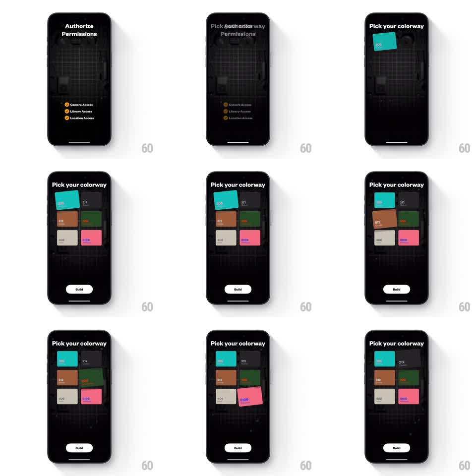

Media
Frame-by-frame

Rebuild this interaction 1:1: Not Boring Camera's colorway picker - six numbered colorway cards stagger in with springy rotation, and tapping one gives it a tactile lift-and-tilt selection before Build.

Rebuild this interaction 1:1: Not Boring Camera's colorway picker - six numbered colorway cards stagger in with springy rotation, and tapping one gives it a tactile lift-and-tilt selection before Build. ## Integration Integration: stack-agnostic spec - springs given as stiffness/damping, timed motions as duration + curve; map every value to your framework and animation library of choice. ## Scene Dark camera UI. After "Authorize Permissions" (Camera, Library, Location rows with orange icons), the "Pick your colorway" screen: a 2x3 grid of colorway cards - "205" teal, "212" black, "512" tan, dark green, "406" cream, "6106" pink - each with its number in the corner, over a faint camera-blueprint background. A white "Build" button sits at the bottom. ## Motion spec Pattern: staggered spring card entrance with tactile selection. - Entrance: cards cascade in reading order (60ms stagger), each from translateY 40pt + rotate -8deg + scale 0.8 (spring ~300/15) with a soft overshoot, landing flat. - Tap a card: it lifts (translateY -6pt, scale 1.05, rotate +-3deg toward the touch point, spring ~340/14) with a deepened shadow; the previous selection settles back (reverse spring). - The selected card's number badge fills with the card's accent color (150ms). - Double-check tap (same card again): a quick confirm bounce (scale 1.05 -> 0.97 -> 1.05, 250ms). - Build button pulses gently once a selection exists (scale 1 -> 1.03, 1.6s loop) and slides up 4pt on tap before advancing. ## Calibration - Cards keep their slight paper texture and corner radius (~10pt) through all transforms. - Rotation direction on entrance alternates subtly per column for a dealt-cards feel. ## Reduced motion Cards fade in staggered (100ms apart); selection is a border highlight. ## Don't miss - The blueprint camera drawing stays faint (~8% opacity) and static behind the grid. - Exactly one card is lifted at a time; deselect animates back, never snaps.